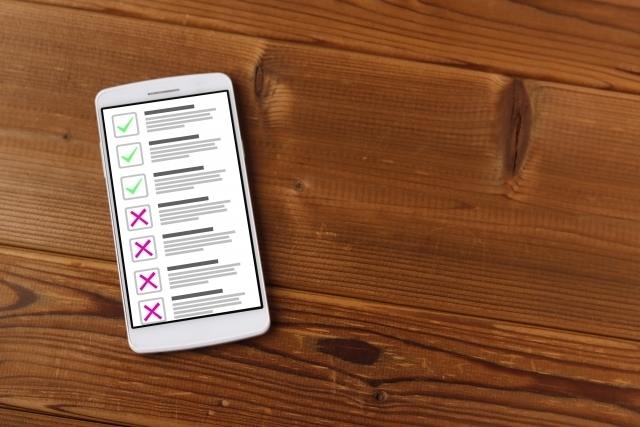
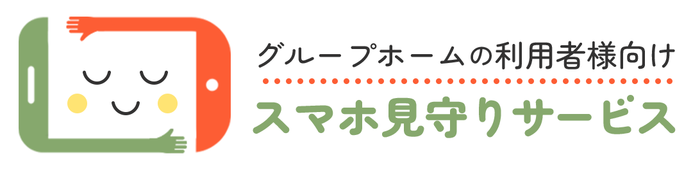
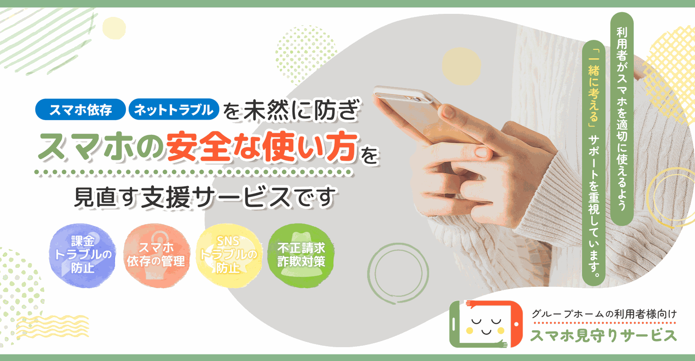
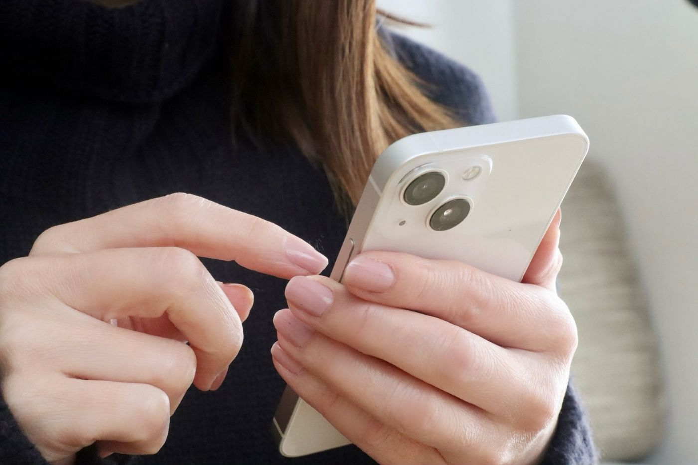
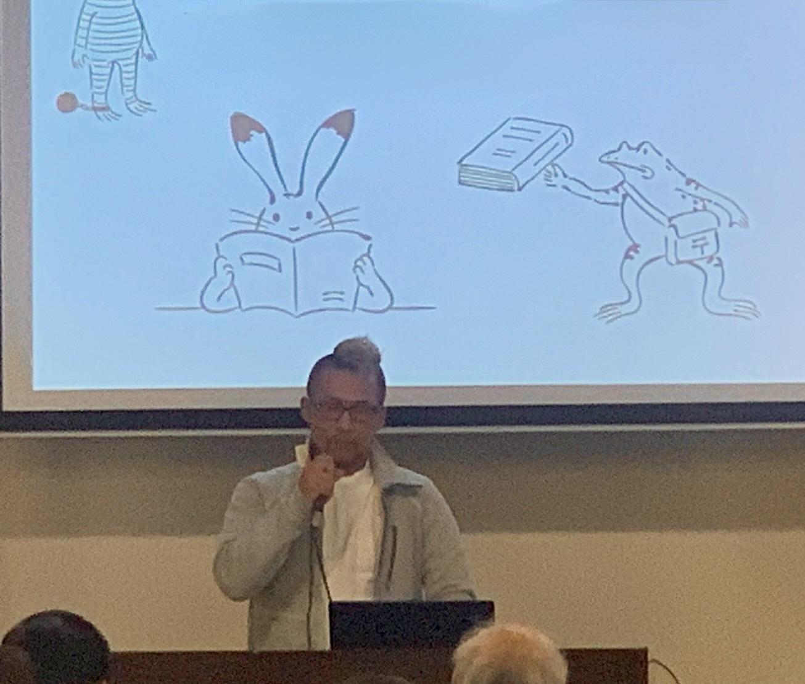

定期的なスマホチェック
利用者のスマホ利用状況をオンライン面談で確認し、安全な使い方をサポートし、トラブルを未然に防ぐアドバイスをご提供いたします。


重要なお知らせ
2025年10月より東京・福岡で開始した「スマホ見守りサービス」のテストマーケティングは、おかげさまで目標としていた500件のご利用に到達いたしました。
これに伴い、本ページからの新規お申し込みおよびお問い合わせの受付を終了させていただきます。
テスト期間中は、東京・福岡・鹿児島の皆さまをはじめ、地元金融機関、携帯キャリアショップを運営する企業、障がいのある方の成年後見に携わる専門職の方々など、多くの皆さまから貴重なご意見とご助言をいただきました。
皆さまからいただいた声をもとに改良を重ね、このたび本サービスを正式にリリースする運びとなりました。ご協力いただいたすべての皆さまに、心より感謝申し上げます。
正式版のサービス内容およびお申し込み方法は、準備が整い次第、あらためてご案内いたします。
合同会社Uribo
『スマホ見守りサービス』は、グループホームの利用者様が、スマホを安心・安全に使えるようサポートする見守りサービスです。知的障がいや、発達障がいのある方は、スマホのリスクを理解しにくく、課金トラブル・スマホ依存・SNSトラブル・詐欺被害などに巻き込まれることが少なくありません。
本サービスでは、専門スタッフが定期的なオンライン面談を通じて、スマホの利用状況を一緒に振り返り、トラブルを未然に防ぎます。また、支援者（ご家族や施設職員）とも連携し、利用者にとって最適なスマホのルール作りをサポートいたします。
「一方的に制限する」のではなく、利用者が主体的にスマホと向き合えるよう、共に考えながら安心できる環境を整えます。

利用者のスマホ利用状況をオンライン面談で確認し、安全な使い方をサポートし、トラブルを未然に防ぐアドバイスをご提供いたします。
スマホの使用時間やアプリの履歴を分析し、依存やリスクを可視化して、個別に最適なルールを作ります。
動画視聴やゲームなどの使い過ぎを防ぐため、生活リズムを整える習慣作りを支援し、無理のないスマホの使い方を目指します。
不用意な課金や不正請求のリスクをチェックし、課金制限や詐欺対策を行い、安全なスマホ利用をサポートいたします。
ご家族や施設職員に向けて、利用者のスマホ状況を分かりやすくレポートし、適切な見守り方法をアドバイスいたします。
課金問題や詐欺メールなど、スマホに関するトラブルが発生した際、すぐ相談できる安心の緊急サポートをご提供いたします。
【問題点】
「無料ゲームのつもりが、気づいたら何万円も課金していた…」
➡ 面談で課金履歴を確認し、不要なサブスクの解約や課金制限を設定
【問題点】
「夜遅くまで動画を見てしまい、朝起きられない…」
➡ 利用者と話し合い、夜間のスクリーンタイム制限を設定
【問題点】
「知らない人に個人情報を教えてしまった…」
➡ SNSのプライバシー設定を見直し、危険なキーワードにアラートを設定
【問題点】
「詐欺メールを開いてしまったが、どうすればいいのかわからない…」
➡ 詐欺メールの見分け方や対応方法を指導し、今後の対策をアドバイス
まずは、オンライン面談を通じて、利用者のスマホの使用状況や困りごとを詳しく伺います。普段どのようにスマホを使っているのか、どんなアプリをよく利用するのか、気になっている問題があるかなど、具体的な状況を把握することで、最適なサポートの第一歩を踏み出します。
スクリーンタイムやアプリの使用履歴を確認し、どのアプリをどのくらいの時間使っているのかを分析します。無意識のうちに長時間利用しているアプリがないか、課金が発生しやすいアプリが含まれていないかなどをチェックし、利用傾向を明確にします。
専門員と一緒に、課金トラブルの兆候やSNSでのリスクを分析します。例えば、ゲームの課金履歴や不審なメッセージのやり取りがないか、ネット上で知らない人と関わる危険性がないかを確認し、潜在的な問題を洗い出します。これにより、どのような対策が必要なのかを具体的に考えることができます。
分析結果をもとに、スマホを安全に利用するためのルールを決めます。例えば、「1日の利用時間を〇時間までにする」「課金をする前に必ず確認を取る」「SNSの投稿設定を見直す」といった具体的な対策を話し合い、利用者にとって無理のない形で実践できるルールを作成します。
一度決めたルールがきちんと守られているか、困ったことが発生していないかを定期的にチェックします。支援者（家族や施設職員）にも利用状況を共有し、必要に応じてサポート内容を見直します。万が一トラブルが発生した場合も、専門員が適切なアドバイスを行い、安心してスマホを使い続けられる環境をサポートします。
最大の特徴は、スマホ依存やネットトラブルに精通した専門スタッフが対応する点です。一般的なスマホ管理サービスが「使用制限」に重点を置くのに対し、当サービスでは「なぜトラブルが起こるのか？」を深掘りし、根本的な解決を目指します。
Check！
一時的な制限ではなく、長期的に問題を改善するサポートを行います。
多くのスマホ管理サービスは、利用者本人の管理に重点を置いていますが、当社は支援者（家族・施設職員・後見人）へのサポートも重視。「スマホの操作に詳しくない」「トラブル対応に時間が取れない」といった支援者の悩みに寄り添い、利用者と支援者双方の負担を軽減します。
Check！
支援者も安心してご利用できる、相談しやすい環境を整えています。
他社では、月額1,500円～2,000円以上のスマホ管理サービスが多い中、当社は月額500円～800円というリーズナブルな料金でご提供。「AIによる自動管理」や「完全監視型のサービス」ではなく、専門スタッフによる実用的な支援を低コストで受けられます。
Check！
気軽に始められる価格設定で、安心のサポートを受けられます。
導入してから、利用者さんのスマホトラブルがぐっと減りました。今思えば、サービスをお願いするまで、ご本人のプライバシーの問題や、どのような形で支援を行えば良いか戸惑い、利用者の方とトラブルが起きる度に一方的なルールの押しつけなどで対応（火消し）を行っていました。
このサービスをお願いする様になってからは、トラブルの背景をしっかりと考える事で、日々の生活や精神面も安定して頂ける事を知りました。
いつも有難うございます。スマホ見守りサービスは多くの方の助けとなります。頑張ってください。
施設管理者（Aさん）
スマホゲームが原因で日中、作業所をお休みされる利用者様への、利用時間の取り決めや、スマホゲームを通じて知りたった方に、PayPayで少額のお金を渡していた件もスタッフの方からのご指摘で発見でき、トラブルを最小限に抑えることができました。
利用者様も不安だった様で、その件以降、自ら見守りサービスの方に色々と相談をしているようです。我々も安心して見守ることができるようになりました。特に、怪しいメッセージや迷惑メールが届いたときにすぐ相談できるのがありがたいです。
又、施設から利用者様に触接指摘する必要が少なくなる為、スタッフの方に運営側で困っていることを利用者様に伝えていただくことも快く応じていただけるため、ありがたいです。
世話人（Bさん）
以前は、子どもがスマホでどんなことをしているのか分からず、不安がありました。でも、見守りサービスを利用することで、使い方の指導もしてもらえて、変なサイトにアクセスすることもなくなったようです。
本人も”スマホのことを相談できる人がいる”と安心しているようです。スマホの請求額にも怯える必要なく助かってます。
見守りサービスで無駄な課金を防止して頂いているので、現時点の見守りサービスの金額であれば末永くサービスを運営して頂きたいと願っています。
利用者の家族（Cさん）
相談事業所様から、スマホに問題のある方（課金・対人トラブル・依存症）のご紹介が何度かあり、今まではお断りしてました。施設として、利用者さんのスマホトラブルにどう対応すればいいか分からない部分が多かったのです。
今は、専門的なサポートを受けられることで、私たちも安心して、そのような方の受け入れる事が出来る様になりました。
病院での退院に向けたカンファレンスなどにもZOOMでスタッフの方が参加頂き、スマホの利用に関する取り決めを事前に打ち合わせした上で、入居して頂く流れが取れるので、非常に助かっています。
施設のオーナー（Dさん）
1端末あたり/月額500円

1端末あたり/月額800円
基本機能に加え、以下の機能を追加
安心してご利用いただけるよう、万全のサポート体制を整えています。
【診断内容】
「ワンコイン診断」は、スマホの利用状況を評価・分析し、適切な使い方をサポートするためのチェックツールです。以下の公的機関や専門機関の指標を参考に、スマホ利用の傾向を確認し、リスクを可視化することで、より安全な利用環境づくりをお手伝いします。
本サービスの診断結果は医学的な「診断」ではなく、スマホの使用状況を見直すための参考情報としてご活用いただけます。深刻な依存やトラブルが疑われる場合は、専門機関への相談を推奨いたします。
科学的根拠に基づいた評価をもとに、スマホの適切な使い方をサポートし、安全なデジタル環境づくりをお手伝いします。
【期間限定価格】500円
サイト内の「ボタン」より決済を行ってください。決済完了後、登録メールアドレスに「診断予約ページ」のURLを送付いたします。診断を受けたい日時を選んで、ご予約を必ず行ってください。
予約した日時に診断（オンライン or チャット形式）で行います。質問に答えるだけで、スマホの使用状況を分析いたします。
診断後、スマホ使用の問題点や改善策をレポート形式で送付いたします。必要に応じて、オンライン面談でアドバイスをさせていただきます。
診断結果をもとに「スマホ見守りサービス（月額500円～）」をご案内させていただきます。ご本人に合った、弊社の見守り案をご提示し、希望者には初月無料で月額サービス開始いたします。
以下の3つの方法からお選びいただけます。
事前に希望の方法をお知らせいただければ、スムーズにご案内します。
詳しい利用方法については、お問い合わせください。
利用者をサポートするために、以下の方法で関与できます。
ご家族や支援者が負担を感じることなく、利用者を見守れるようサポートします。
詳しいサポート内容については、お問い合わせください。
はい、ご安心ください。
個人情報は厳重に管理しています。
プライバシーを守りながら、安全にサービスを利用できる環境を整えています。
詳細なセキュリティ対策については、お問い合わせください。
以下のような兆候をもとに、課金トラブルのリスクを判断します。
利用者が早めに相談できる環境を整え、トラブルの深刻化を防ぎます。
詳しい対策方法については、お問い合わせください。
利用者が安全にSNSを使えるよう、以下の対策を行います。
SNSは便利なツールですが、リスクも伴うため、適切なルールを一緒に考えます。
詳しい設定方法については、お問い合わせください。
ルールを無理に押し付けるのではなく、利用者と一緒に見直しながら調整することが重要です。
利用者が「自分のためのルール」として理解し、無理なく守れるようサポートします。
ルール設定のコツについては、お問い合わせください。
はい、途中解約は可能です。
ご状況に応じた対応が可能ですので、安心してご利用ください。
解約手続きの詳細については、お問い合わせください。

皆さま、こんにちは。
このたびは「スマホ見守りサービス」にご興味を持って頂き有難うございます。
私たちは、スマートフォンが生活の一部となった現代において、特に障がいをお持ちの方々やそのご家族が、安全で安心なデジタル環境を提供することを目的に「スマホ見守りサービス」を立ち上げました。
依存症回復施設で5年間、障がい者グループホームで2年間、合計7年間にわたり、支援を必要とする方々のスマートフォン利用に関する支援を行ってきました。その中で、スマホ依存、高額課金、詐欺被害、ネットトラブルなど、多くの課題に直面する方々と接し、ご家族や支援者の皆さまが抱える悩みを数多く耳にしてきました。
印象として、トラブルに巻き込まれるケース以外に、遊び感覚でSNSなどで知り合った方にゲーム内で使用する課金アイテムや、現金の要求なども件数として上がっているように感じます。
「スマホ見守りサービス」は、単なるフィルタリングや利用制限のサービスではありません。利用者の方の自立を支え、家族や支援者と共に、安心してスマホを活用できる環境を整えることを目指しています。試験運用の期間（今回のキャンペーン期間）を通じて、皆さまからのご意見を大切にし、より実用的で支援に役立つサービスへと成長させていきます。
誰もが安心してスマートフォンを使える社会を目指し、これからも皆さまと共に歩んでまいります。どうぞよろしくお願いいたします。
※下記に「必要事項」をご記述の上、お問い合わせをお願いいたします
| 【運営主体】 | 合同会社Uribo スマホ見守り支援チーム |
|---|---|
| 【会社名】 | 合同会社 Uribo |
| 【代表者名】 | 代表社員 藤原 寛 |
| 【設立年月日】 | 令和7年2月6日 |
| 【資本金】 | 金20万円 |
| 【事業内容】 | 障害者の日常生活及び社会生活を総合的に支援するための法律に基づく障害福祉サービス事業 |
| 【所在地】 | 〒899-4325 鹿児島県霧島市国分松木町18番27号206号 |
| 【お問い合わせ】 | 専用フォームにて受付（対応時間: 平日 9:00 ～ 18:00） |
| 【販売価格】 | サイト内に記載の価格 |
| 【支払方法】 | クレジットカード、コンビニ決済、銀行振込、Amazon Pay |
| 【キャンセル】 | 決済後のキャンセルは受け付けておりません |